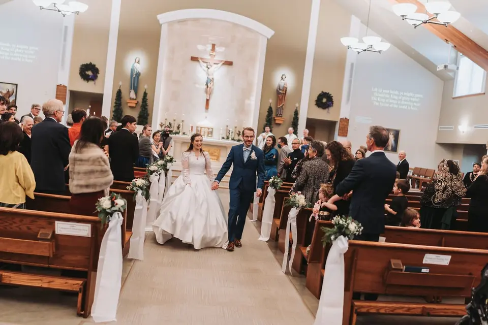

Step 01 / 04About a minute
Enquire
Tell Jason your date and a few details. You’ll see which collection fits straight away, and he replies to you personally.
Start your enquiry



Catholic and Christian weddings, engagements and families, photographed with reverence by Jason Smith from Centennial, Colorado.
I’m Jason, a husband and father of six telling stories of love, family and faith through honest photographs and quiet film, so you can live your day all over again.
From the engagement to the wedding Mass to the family that grows from it, told with the same honest eye.

Telling the story of Christ’s work in His world, one couple and one family at a time.
Calm in the joyful chaos.
Six children at home means a full church and a lively reception never rattle Jason.


“Not only was it an absolute breeze to work together, but his creativity truly blew me away. If you’re in need of some stunning wedding photos, look no further!”
A first look at your images lands within a week, while the glow is still fresh.
Jason regularly photographs Catholic and Christian weddings, and he’s at home working within church guidelines: present for every moment, while the focus stays on prayer and the sacrament.
Most couples book 9 to 18 months ahead, especially for spring and fall. On a shorter timeline? Ask anyway.
Tell Jason your date and a few details. You’ll see which collection fits straight away, and he replies to you personally.
Start your enquiryA call or a coffee to hear your story and answer every question. Every price is negotiable, because everyone deserves beautiful photography.

A relaxed session to get comfortable in front of the camera, with photos made for your save-the-dates.

Jason coordinates with your parish, documents the day quietly, sends a preview within a week and your full gallery in about 6 to 8 weeks. KISSBOOK and ZNO albums are available too.

Easygoing, creative and calm. Here’s what it feels like to have Jason there.
“Jason made our engagement photoshoot an absolute delight! His creativity and easygoing nature turned the experience into a fun and memorable event. He captured our love perfectly and made us feel comfortable throughout.”

“Not only was it an absolute breeze to work together, but his creativity truly blew me away. If you’re in need of some stunning wedding photos, look no further!”
Your story, next.
Four quick steps and you’ll know which collection fits your day.